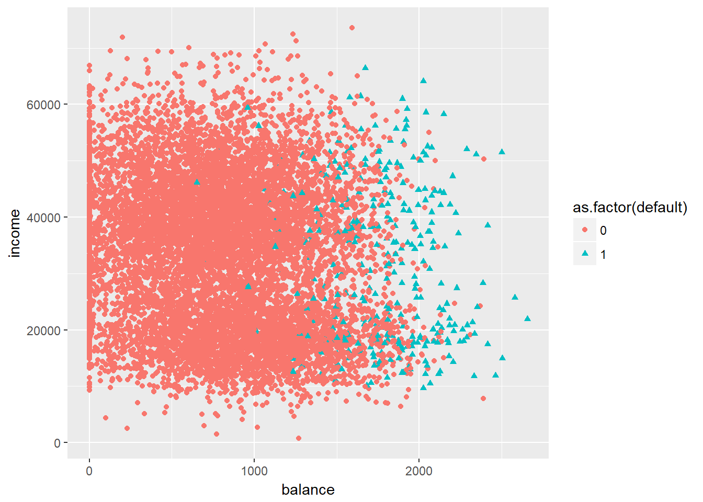
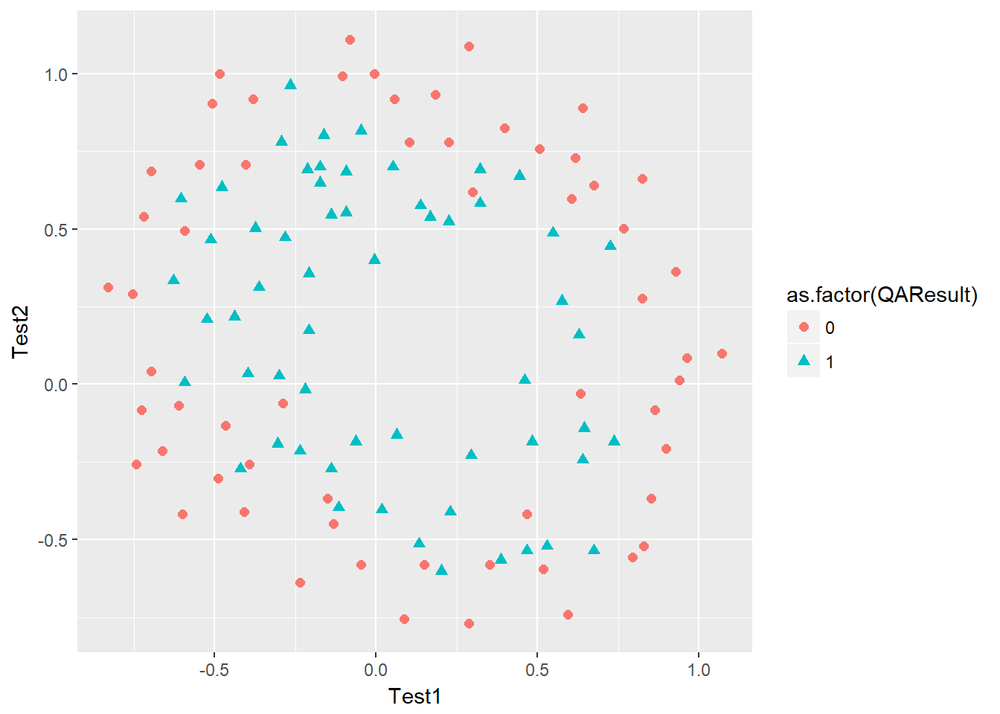
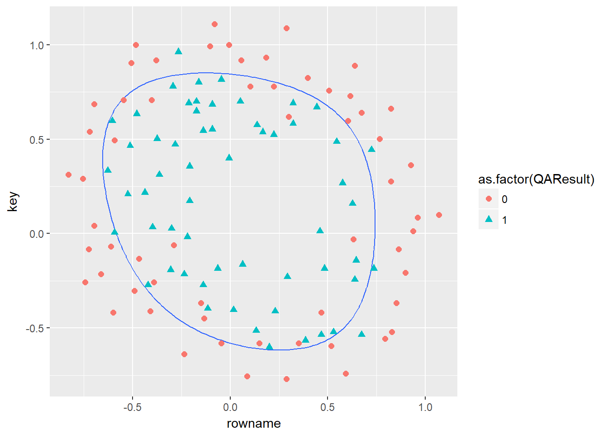

Logistic regression is used when our response variable is qualitative, in particular it is assumed to be bernullian \(Y_i \sim Bernoulli(\mu_i)\). This means that the variable can assume the value of 1 or 0 (or True or False).
For the analysis we will use the dataset Default from the ISLR package 1. The dataset that contains customer default records for a credit card company.
library(ggplot2)
library(ISLR)
library(tidyverse)## -- Attaching packages -------------------------------------------- tidyverse 1.2.1 --## v tibble 1.4.2 v purrr 0.2.4
## v tidyr 0.8.0 v dplyr 0.7.4
## v readr 1.1.1 v stringr 1.3.0
## v tibble 1.4.2 v forcats 0.3.0## -- Conflicts ----------------------------------------------- tidyverse_conflicts() --
## x dplyr::filter() masks stats::filter()
## x dplyr::lag() masks stats::lag()Logistic regression models the probability that \(Y\) belongs to a particular category. The hypothesis is defined as follow 2:
\(h_\theta(x) = g(\theta^Tx)\)
Where function g is the sigmoid function. The sigmoid function is defined as:
\(g(z) = \displaystyle\frac{1}{1+e^{-z}} = \frac{e^z}{1 + e^z}\)
sigmoid <- function(z) {
g <- 1 / (1 + exp(-z))
return(g)
}To measure the performance of the model, we use cost functions, these are a measure of how badly a model is predicting our response variable. The logistic regression cost function is:
\(J(\theta) = \frac{1}{m} \displaystyle\sum_{i=1}^{m}[-y^{(i)} \log(h_\theta(x^{(i)})) - (1 - y^{(i)}) \log(1 - h_\theta(x^{(i)}))]\)
costFunction <- function(theta, X, y) {
m <- length(y)
J <- 0
J <- 1/m * ((t(log(sigmoid(X %*% theta))) %*% (-y))
- t(log(1 - sigmoid(X %*% theta))) %*% (1 - y))
return(J)
}The gradient of the cost function is the derivative of it. Gradient is used to minimize our cost function as it represent its slope.
gradient <- function(theta, X, y) {
m <- length(y)
grad <- rep(0, length(theta))
grad <- 1/m * t(X) %*% (sigmoid(X %*% theta) - y)
return(grad)
}We upload the data and we convert it into matrix because we are going to use vectorization for our calculation.
data(Default)
Default$default <- ifelse(Default$default == "No", 0, 1)
X <- as.matrix(Default[, 3:4])
X <- cbind(matrix(rep(1, nrow(X))), X)
y <- Default[, 1]
ggplot(Default, aes(x = balance, y = income, color = as.factor(default), shape = as.factor(default))) + geom_point()
The data shows defaults depending on balance and income. In order to obtain our thetas, we are going to use the built-in optimization function in R: optim. As parameters, we provide the initial values of theta (in this case all 0), the cost function to minimize and our gradient. We then select a minimization method (see ?optim for additional information).
initial_theta <- matrix(c(0, 0, 0))
theta_optim <- optim(par = initial_theta, fn = costFunction, gr = gradient, X = X, y = y, method = "BFGS")We are now ready to plot our decision boundary obtained from logistic regression that corresponds to the probability of 0.5.
To calculate slope and intercept we follow the below process:
Our response variable \(Y\) is equal to 1 when our hypotesis \(h_\theta\geqslant0.5\), that in the case of the sigmoid function, corresponds to \(z\geqslant0\). In our case we have:
\(\theta_0 + \theta_1 x_1 + \theta_2 x_2 \geqslant 0\)
solving per \(x_2\) we have:
\(x_2\geqslant\displaystyle\frac{-\theta_0}{\theta_2} + \frac{-\theta_1}{\theta_2}x_1\)
where our intercept term is: \(\displaystyle\frac{-\theta_0}{\theta_2}\)
and our slope is: \(\displaystyle\frac{-\theta_1}{\theta_2}\)
ggplot(Default, aes(x = balance, y = income, color = as.factor(default), shape = as.factor(default))) + geom_point() + geom_abline(slope = (-theta_optim$par[2] / theta_optim$par[3]), intercept = (-theta_optim$par[1] / theta_optim$par[3]), colour = "blue", size = 1)Finally we can perform some predictions. For example, we can calculate the probability that our client with a balance of 2000 and an income of 40000 dollars will not default.
sigmoid(c(1, 2000, 40000) %*% theta_optim$par)## [,1]
## [1,] 0.6418613We are going now to calculate the accuracy on our training setting to 1 all the observations for which the probability is bigger or equal than 0.5.
prediction <- sigmoid(X %*% theta_optim$par) >= 0.5
cat(mean(as.integer(prediction) == y) * 100, "%")## 97.37 %data <- read.csv("C:\\Projects\\StanfordMachineLearning\\machine-learning-ex2\\ex2\\ex2data2.txt", header = F)
colnames(data) <- c("Test1", "Test2", "QAResult")
X <- as.matrix(data)
y <- X[, 3]
X <- X[, 1:2]
ggplot(data, aes(x = Test1, y = Test2, color = as.factor(QAResult), shape = as.factor(QAResult))) + geom_point(size = 2)
Cost function with reg
costFunction <- function(theta, X, y, lambda) {
m <- length(y)
J <- 0
J <- 1/m * ((t(log(sigmoid(X %*% theta))) %*% (-y)) -
t(log(1 - sigmoid(X %*% theta))) %*% (1 - y)) +
lambda / (2 * m) * sum(theta[2:length(theta)] ^ 2)
return(J)
}and gradient. The first term is not regularized.
gradient <- function(theta, X, y, lambda) {
m <- length(y)
grad <- rep(0, length(theta))
grad <- 1/m * t(X) %*% (sigmoid(X %*% theta) - y) +
rbind(0, matrix((lambda/m) * theta[2:length(theta)]))
return(grad)
}mapFeature <- function(X1, X2) {
degree <- 6
out <- matrix(rep(1, length(X1)))
for (i in 1:degree) {
for (j in 0:i) {
out <- cbind(out, (X1 ^ (i-j)) * (X2 ^ j))
}
}
return(out)
}X <- mapFeature(X[, 1], X[, 2])initial_theta <- matrix(rep(0, ncol(X)))
lambda <- 1
theta_optim <- optim(par = initial_theta, fn = costFunction, gr = gradient, X = X, y = y, lambda = lambda, method = "BFGS")This is the decision boundary of logistic regression that corresponds to the probability of 0.5
u <- v <- seq(min(data), max(data), length.out = 100)
z <- matrix(0, nrow =length(u), ncol = length(v))
for (i in 1:length(u)) {
for (j in 1:length(v)) {
z[i, j] <- mapFeature(u[i], v[j]) %*% theta_optim$par
}
}rownames(z) <- seq(min(data), max(data), length.out = 100)
colnames(z) <- seq(min(data), max(data), length.out = 100)
as.data.frame(z) %>%
rownames_to_column() %>%
gather(key, value, -rowname) %>%
mutate(key = as.numeric(key),
rowname = as.numeric(rowname)) %>%
ggplot() + geom_contour(aes(x = rowname, y = key, z = value), bins = 1) +
geom_point(data=data, aes(x = Test1, y = Test2, color = as.factor(QAResult),
shape = as.factor(QAResult)), size = 2)## Warning: package 'bindrcpp' was built under R version 3.4.4
James, Witten, Hastie, Tibshirani. An Introduction to Statistical Learning. New York: Springer-Verlag, 2013. http://www-bcf.usc.edu/~gareth/ISL/index.html↩
For formula and notation please see: Ng, Andrew. Machine Learning. Stanford University. Online course provided by Coursera. https://www.coursera.org/learn/machine-learning.↩